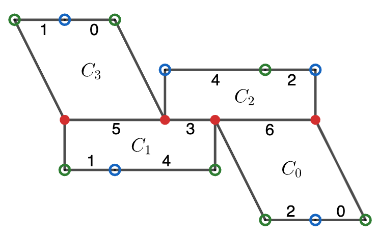

Filtering Possible \(\mathcal M\)-Parallel Classes#
The purpose of this notebook is to use Sage to assist in the classification of rank 2 invariant subvarieties in strata of translation surfaces in genus 3. This classification was already done through other methods by David Aulicino, Duc Man Nguyen, and Alex Wright, but the methods described here, which is used in my forthcoming PhD thesis, can be readily applied to other strata.
Assume \(\mathcal M\) is an invariant subvariety in a stratum \(\mathcal H\). We
will start with a horizontally periodic translation surface \(M\in \mathcal M\).
A database for the possible cylinder diagrams for \(M\) can be found in
surface-dynamics: see
here. Here is an
example:
from surface_dynamics import CylinderDiagram
CylinderDiagram('(0,2)-(6) (1,4)-(3,5) (3,6)-(2,4) (5)-(0,1)')
(0,2)-(6) (1,4)-(3,5) (3,6)-(2,4) (5)-(0,1)

Assume \(M\) has a cylinder diagram with \(n\) cylinders, and label them \(0\) to
\(n-1\) from left to right. Assume that these cylinders are partitioned into \(m\)
distinct \(\cal M\)-parallel classes, and we want to know all possible ways to do
this. The following function uses existing Sage functions to list all possible
partitions. The point of this notebook is to filter out some of these candidate
partitions by checking certain conditions. Although we won’t use it here, you
can set singletons=False if you do not want to allow cylinders in an \(\cal
M\)-parallel class by themselves.
from sage.all import Partitions, SetPartitions
def list_partitions(n, m, singletons=True):
"""Return a list of all ways to partition the set [1..n] into m sets.
If singletons==False, do not allow singleton sets.
Each element of each partition is a frozen set.
Each partition is an instance of
`sage.combinat.set_partition.SetPartitions_setparts_with_category.element_class`."""
partitions = []
# Partition the integer n into m nonzero integers
int_parts = Partitions(n, length=m).list()
# Checks for singleton sets
if not singletons:
int_parts = [l for l in int_parts if not any([i == 1 for i in l])]
# Coverts integer partitions into set partitions
for each_part in int_parts:
partitions.extend(SetPartitions(range(n), each_part))
return partitions
# Tests
assert len(list_partitions(5, 2, singletons=True)) == 15
assert len(list_partitions(6, 2, singletons=False)) == 25
assert len(list_partitions(6, 3, singletons=False)) == 15
list_partitions(4, 2)
# [{{0}, {1, 2, 3}},
# {{0, 1, 2}, {3}},
# {{0, 1, 3}, {2}},
# {{0, 2, 3}, {1}},
# {{0, 1}, {2, 3}},
# {{0, 3}, {1, 2}},
# {{0, 2}, {1, 3}}]
[{{0}, {1, 2, 3}},
{{0, 1, 2}, {3}},
{{0, 1, 3}, {2}},
{{0, 2, 3}, {1}},
{{0, 1}, {2, 3}},
{{0, 3}, {1, 2}},
{{0, 2}, {1, 3}}]
Homologous Condition#
The first condition is simply that two homologous cylinders must be in the same
\(\cal M\)-parallel class. filter_homologous_condition removes partitions that
do not satisfy this condition.
from surface_dynamics.flat_surfaces.twist_space import TwistSpace
def check_homologous_condition(cd, partition):
"""Check that homologous cylinders are in the same M-parallel class
in `partition`."""
tw = TwistSpace(cd)
classes = tw.homologous_cylinders()
for homology_class in classes:
homology_class = frozenset(homology_class)
for f_set in partition:
intersection = f_set.intersection(homology_class)
# Every set in the partition must contain the whole homology class
# or none of it.
if intersection != frozenset() and intersection != homology_class:
return False
return True
def filter_homologous_condition(cd, part_list):
"""rFilter out the partitions in part_list when
check_homologous_condition=False."""
return [part for part in part_list if check_homologous_condition(cd, part)]
Example#
For the cylinder diagram (0,3)-(0,5) (1,2)-(1,4) (4,6)-(3,7) (5,7)-(2,6), the last two cylinders (numbered 2 and 3) are homologous. Thus, the remaining partitions should be exactly those that put 2 and 3 in the same set.
part_list = list_partitions(4, 2)
cd = CylinderDiagram('(0,3)-(0,5) (1,2)-(1,4) (4,6)-(3,7) (5,7)-(2,6)')
filter_homologous_condition(cd, part_list)
# [{{0}, {1, 2, 3}}, {{0, 2, 3}, {1}}, {{0, 1}, {2, 3}}]
[{{0}, {1, 2, 3}}, {{0, 2, 3}, {1}}, {{0, 1}, {2, 3}}]
# Tests
cd = CylinderDiagram('(0,2,1)-(4,5) (3,5)-(0,2,1) (4)-(3)')
tw = TwistSpace(cd)
assert set(tw.homologous_cylinders()[0]) == {0, 1}
cd = CylinderDiagram('(0,3)-(0,5) (1,2)-(1,4) (4,6)-(3,7) (5,7)-(2,6)')
tw = TwistSpace(cd)
assert set(tw.homologous_cylinders()[0]) == {2, 3}
cd = CylinderDiagram('(0)-(2) (1,2,3)-(4,5) (4)-(3) (5)-(0,1)')
tw = TwistSpace(cd)
assert tw.homologous_cylinders() == []
part_list = list_partitions(3, 2)
cd = CylinderDiagram('(0,2,1)-(4,5) (3,5)-(0,2,1) (4)-(3)')
good_part = filter_homologous_condition(cd, part_list)
assert len(good_part) == 1
part_list = list_partitions(5, 2)
cd = CylinderDiagram('(0)-(2) (1)-(3) (2,4,3)-(5,6) (5)-(4) (6)-(0,1)')
good_part = filter_homologous_condition(cd, part_list)
assert len(good_part) == 15
cd = CylinderDiagram('(0,1)-(0,6) (2)-(5) (3)-(4) (4,5)-(1) (6)-(2,3)')
good_part = filter_homologous_condition(cd, part_list)
assert len(good_part) == 7
Pants Condition#
We define a generalized pants to be a pair of pants with potentially more
than two pant legs. This gives an equation in homology between the core curves
of the cylinders in the pants of the form \(\gamma_1 = \sum_{i=2}^k \gamma_i\).
Because of this equation, we have that these cylinders cannot be contained in
exactly two distinct \(\cal M\)-parallel classes. To see this, recall that the
core curves of \(\cal M\)-parallel cylinders become colinear when projected to
the dual of the tangent space of \(M\). filter_pants_condition filters out
partitions that do not satisfy this condition.
In general, a homology relation between core curves of cylinders should give a condition of partitions; this case and the previous one are both specific examples of this. It would be nice to have a more general function that finds all homology relations, and determines all such conditions.
def find_cylinder_in_partition(partition, cylinder):
"""Find the M-parallel class in `partition` than contains `cylinder`.
`partition` is a list of frozen sets.
`cylinder` is an integer
Return the index of the element of `partition` that contains `cylinder`."""
for i, parallel_class in enumerate(partition):
if cylinder in parallel_class:
return i
# If cylinder was not found in partition
return None
def check_pants_condition(partition, pants_list):
"""Check the partition satisfies any homology conditions coming from
the pants in pants_list.
`partition` is a partition of the horizontal cylinders into M-parallel
classes.
`pants_list` is a list of pants, where each pants is a frozenset containing
every cylinder in the pants
The homology condition is the following:
the cylinders in the pants cannot be contained in exactly two distinct sets
in `partition`.
"""
for pants in pants_list:
# A list of the cylinder classes that contain a cylinder of pants
cylinder_classes = map(
lambda c: find_cylinder_in_partition(partition, c),
pants
)
if len(set(cylinder_classes)) == 2:
return False
return True
def find_generalized_pants(digraph):
"""Finds cases when n cylinders are all only attached to the side
of a single cylinder. This is like a generalized version of a
topological pair of pants allows n pant legs.
Input: A cylinder diagram.
Output: A set of pants. Each pants is a frozenset consisting of the
cylinders in the pants.
Note: For Python 3.7 and higher, frozensets should maintain insertion
order. Thus, the first element of each pants is the waist curve and the
rest are the pant legs. However, we do not use this in our code."""
pants_set = set()
for n in digraph:
# If every cylinder above `C` is only adjacent to `C` along its
# bottom, this is a generalized pants.
neighbors_out = list(digraph.neighbors_out(n))
if all([list(digraph.neighbors_in(suc)) == [n]
for suc in neighbors_out]):
pants = frozenset([n] + neighbors_out)
pants_set.add(pants)
# If every cylinder below `C` is only adjacent to `C` along its
# top, this is a generalized pants.
neighbors_in = list(digraph.neighbors_in(n))
if all([list(digraph.neighbors_out(pre)) == [n]
for pre in neighbors_in]):
pants = frozenset([n] + neighbors_in)
pants_set.add(pants)
return pants_set
def filter_pants_condition(cd, part_list):
"""Filter out the partitions in part_list when check_pants_condition=False.
"""
cyl_graph = cd.cylinder_graph()
pants_list = list(find_generalized_pants(cyl_graph))
return [partition for partition in part_list
if check_pants_condition(partition, pants_list)]
Example#
For cylinder diagram (0,3)-(5) (1)-(2) (2,5)-(3,4) (4)-(0,1), the first three cylinders {0, 1, 2} form a pair of pants. Thus, they must all be in the same \(\cal M\)-parallel class or all be in different ones. The only partition with two \(\cal M\)-parallel classes is thus {{0, 1, 2}, {3}}.
cd = CylinderDiagram("(0,3)-(5) (1)-(2) (2,5)-(3,4) (4)-(0,1)")
print(f"The pants of this cylinder diagram are: {find_generalized_pants(cd.cylinder_graph())}.")
# {frozenset({0, 1, 2})}
partitions = list_partitions(4, 2)
filter_pants_condition(cd, partitions)
# [{{0, 1, 2}, {3}}]
The pants of this cylinder diagram are: {frozenset({0, 1, 2})}.
[{{0, 1, 2}, {3}}]
# Tests
## check_pants_condition
assert check_pants_condition([{1}, {2}, {3}], [[1, 2, 3]])
assert not check_pants_condition([{0, 1}, {2, 3}], [[1, 2, 3]])
assert check_pants_condition([{0, 1, 2, 3}], [[1, 2, 3]])
# find_generalized_pants
cd = CylinderDiagram("(0)-(2) (1,2,3)-(4,5) (4)-(3) (5)-(0,1)")
cd_g = cd.cylinder_graph()
assert find_generalized_pants(cd_g) == set([frozenset([1, 2, 3])])
cd = CylinderDiagram("(0,3)-(5) (1)-(0) (2,5)-(3,4) (4)-(1,2)")
cd_g = cd.cylinder_graph()
assert find_generalized_pants(cd_g) == set()
cd = CylinderDiagram("(0,2,1)-(3,4,5) (3)-(1) (4)-(2) (5)-(0)")
cd_g = cd.cylinder_graph()
assert find_generalized_pants(cd_g) == set([frozenset([0, 1, 2, 3])])
cd = CylinderDiagram("(0)-(2) (1)-(3) (2,4,3)-(5,6) (5)-(4) (6)-(0,1)")
cd_g = cd.cylinder_graph()
assert find_generalized_pants(cd_g) == set([frozenset({0, 1, 4}), frozenset({2, 3, 4}), frozenset({0, 1, 2, 3})])
# filter_pants_condition
cd = CylinderDiagram("(0,3)-(0,5) (1,2)-(1,4) (4)-(3) (5)-(2)")
partitions = list_partitions(4, 2)
assert len(filter_pants_condition(cd, partitions)) == 7
cd = CylinderDiagram("(0,2,1)-(3,4,5) (3)-(1) (4)-(2) (5)-(0)")
partitions = list_partitions(4, 2)
assert len(filter_pants_condition(cd, partitions)) == 0
Standard Twist Condition#
Now assume that \(\cal M\) is rank 2 and \(M\) has at least 3 \(\cal M\)-parallel
classes. Let \(\sigma_1,\sigma_2,\sigma_3\) be the standard twists of these
classes, and \(p\) be the projection from relative to absolution cohomology. By
definition of rank, \(p(\sigma_1), p(\sigma_2), p(\sigma_3)\) are in a 2
dimensional subspace of cohomology, so there must be a linear relation. Up to
relabeling, the equation must be of the form \(a_1p(\sigma_1) = a_2p(\sigma_2) +
a_3p(\sigma_3)\), where crucially \(a_1,a_2,a_3>0\). Often, this equation has no
solutions, which rules out the partition. We can use linear programming to
determine exactly when such an equation has a solution. If \(\cal M\) has more
than 3 \(\cal M\)-parallel classes, we have one such equation for any triple
(although many of these equations will be redundant).
filter_standard_twist_condition checks this condition.
from sage.all import block_matrix, matrix, MixedIntegerLinearProgram
from sage.numerical.mip import MIPSolverException
def class_matrix(tw, m_class):
"""Stacks the core curves of the cylinders in an M-parallel class into a
single matrix."""
core_curves = list(tw.cylinder_core_curves())
return (matrix([core_curves[i] for i in m_class]))
def ordered_partition(tw, partition):
"""Checks the standard twist condition on a specific ordered set of the
equivalence classes."""
c0 = list(partition[0])
c1 = list(partition[1])
c2 = list(partition[2])
# Convert the equation into the form Ax - b = 0
A = block_matrix(3, 1,
[class_matrix(tw, c0), class_matrix(tw, c1), -class_matrix(tw, c2)],
subdivide=False)
b = -sum(A)
A = A.T
# Find any solution to the linear programming problem
# Ax - b = 0
# x >= 0
p = MixedIntegerLinearProgram(maximization=False)
x = p.new_variable(real=True, nonnegative=True)
p.add_constraint(A*x == b)
try:
p.solve()
return True
except MIPSolverException:
# MIPSolverException means that no solution exists.
return False
def check_standard_twist_condition(tw, partition):
"""If the partition does not have three equivalence classes, return
true. Otherwise, check that the equation
Σa_iα_i = Σb_jβ_j + Σc_kγ_k
has a solution for a_i,b_j,c_k >= 1."""
n = len(partition)
partition = list(partition)
for i in range(n-2):
for j in range(i+1, n-1):
for k in range(j+1, n):
order1 = [partition[i], partition[j], partition[k]]
order2 = [partition[j], partition[k], partition[i]]
order3 = [partition[k], partition[i], partition[j]]
if not any([ordered_partition(tw, order1),
ordered_partition(tw, order2),
ordered_partition(tw, order3)]):
return False
return True
def filter_standard_twist_condition(cd, part_list):
tw = TwistSpace(cd)
return [part for part in part_list
if check_standard_twist_condition(tw, part)]
Examples#
Since these exists an invariant subvariety of rank 2 containing a translation surface \(M\) with cylinder diagram (0,3)-(5) (1)-(0) (2,5)-(3,4) (4)-(1,2), whose \(\cal M\)-parallel classes are {{0, 3}, {1}, {2}}, it is a sanity check that this partition has not been filtered out.
part_list = list_partitions(4, 3)
cd = CylinderDiagram("(0,3)-(5) (1)-(0) (2,5)-(3,4) (4)-(1,2)")
filter_standard_twist_condition(cd, part_list)
# [{{0, 3}, {1}, {2}}, {{0}, {1, 2}, {3}}]
[{{0, 3}, {1}, {2}}, {{0}, {1, 2}, {3}}]
The following is a corollary that we can use as a sanity check. If \(M\) contains exactly 3 \(\cal M\)-parallel classes, the dual of the equation \(a_1p(\sigma_1) = a_2p(\sigma_2) + a_3p(\sigma_3)\) gives an equation in homology that contains the core curve of every cylinder of \(M\). For (0)-(2) (1,2,3)-(4,5) (4)-(3) (5)-(0,1), there is only one equation in homology between {1,2,3}, so it cannot satisfy this condition with 3 \(\cal M\)-parallel classes.
part_list = list_partitions(4, 3)
cd = CylinderDiagram('(0)-(2) (1,2,3)-(4,5) (4)-(3) (5)-(0,1)')
filter_standard_twist_condition(cd, part_list)
# []
[]
# Tests
part_list = list_partitions(4, 3)
cd = CylinderDiagram("(0,2,1)-(3,4,5) (3)-(1) (4)-(2) (5)-(0)")
good_part = filter_standard_twist_condition(cd, part_list)
good_part = [set(part) for part in good_part]
possible = {frozenset({0}), frozenset({1, 3}), frozenset({2})}
assert possible in good_part
possible = {frozenset({0}), frozenset({1, 2}), frozenset({3})}
assert possible in good_part
possible = {frozenset({0}), frozenset({1}), frozenset({2, 3})}
assert possible in good_part
part_list = list_partitions(5, 3)
cd = CylinderDiagram("(0,2)-(6) (1)-(3) (3,6)-(4,5) (4)-(0) (5)-(1,2)")
good_part = filter_standard_twist_condition(cd, part_list)
good_part = [set(part) for part in good_part]
possible = {frozenset({0, 4}), frozenset({1, 3}), frozenset({2})}
assert possible in good_part
part_list = list_partitions(5, 3)
cd = CylinderDiagram("(0,6)-(4,5) (1,2)-(3,6) (3)-(2) (4)-(1) (5)-(0)")
good_part = filter_standard_twist_condition(cd, part_list)
good_part = [set(part) for part in good_part]
possible = {frozenset({0, 1}), frozenset({2, 4}), frozenset({3})}
assert possible in good_part
part_list = list_partitions(4, 3)
cd = CylinderDiagram("(0,3)-(5) (1)-(2) (2,5)-(3,4) (4)-(0,1)")
good_part = filter_standard_twist_condition(cd, part_list)
assert good_part == []
part_list = list_partitions(4, 3)
cd = CylinderDiagram("(0,1)-(0,5) (2)-(4) (3,4)-(1) (5)-(2,3)")
good_part = filter_standard_twist_condition(cd, part_list)
assert good_part == []
Leaf Condition#
The final condition is quite specific but we include it because it is easy to
code up. It is from this paper Lemma 2.11.
Let \(\cal M\) be an invariant subvariety with field of definition \(\mathbb Q\)
and rank at least 2. Assume \(M\) is horizontally periodic and that the core
curves of the horizontal cylinders span a subspace of dimension at least 2 in
the dual of the tangent space. Furthermore, assume there is a simple horizontal
cylinder \(C\) that is only adjacent to another cylinder \(D\). Then, \(C\) and \(D\)
cannot be in the same \(\cal M\)-parallel class. filter_leaf_condition checks
this condition.
Define the cylinder graph as the directed graph, where vertices are cylinders and the edges are saddle connections. We call this the leaf condition since \(C\) is a leaf in the cylinder graph i.e. its only neighbor is \(D\).
def is_simple(cd, index):
"""Check if cylinder number `index` is simple."""
cylinder = cd.cylinders()[index]
if len(cylinder[0]) == 1 and len(cylinder[1]) == 1:
return True
return False
def find_leaves(digraph):
"""Return the tuples (leaf, neighbor) for all leaves of `digraph`.
A leaf is a vertex such that it only has one neighbor, where we
count a vertex as a neighbor if there is either an edge coming from it
or an edge going to it.
For a given leaf, `neighbor` is it's unique neighbor."""
leaf_neighbers = []
for n in digraph:
neighbors = set(digraph.neighbors_out(n)) | \
set(digraph.neighbors_in(n))
if len(neighbors) == 1:
leaf_neighbers.append((n, next(iter(neighbors))))
return leaf_neighbers
def check_leaf_condition(cd, partition):
"""Check for the following condition:
If a cylinder C is only bordering another cylinder D, then C and D cannot
be in the same M-parallel class.
Note that there are some assumptions for this condition.
Refer to the paper for these assumptions."""
cyl_graph = cd.cylinder_graph()
for leaf, neighbor in find_leaves(cyl_graph):
if is_simple(cd, leaf):
if find_cylinder_in_partition(partition, leaf) == \
find_cylinder_in_partition(partition, neighbor):
return False
return True
def filter_leaf_condition(cd, part_list):
"""Filter out the partitions in part_list when check_leaf_condition=False.
"""
return [part for part in part_list if check_leaf_condition(cd, part)]
Example#
In the cylinder diagram (0,1)-(0,2) (2)-(3) (3,4)-(1,5) (5)-(4), we see that cylinder 3 is a leaf adjacent only to cylinder 2. Thus, they cannot be in the same set.
part_list = list_partitions(4, 2)
cd = CylinderDiagram("(0,1)-(0,2) (2)-(3) (3,4)-(1,5) (5)-(4)")
filter_leaf_condition(cd, part_list)
# [{{0, 1, 2}, {3}}, {{0, 1, 3}, {2}}, {{0, 3}, {1, 2}}, {{0, 2}, {1, 3}}]
[{{0, 1, 2}, {3}}, {{0, 1, 3}, {2}}, {{0, 3}, {1, 2}}, {{0, 2}, {1, 3}}]
# Tests
cd = CylinderDiagram("(0)-(1) (1,3,4,2)-(5,6) (5)-(0,4) (6)-(2,3)")
good_part = filter_leaf_condition(cd, part_list)
assert len(good_part) == 7
cd = CylinderDiagram("(0,3)-(5) (1)-(2) (2,5)-(3,4) (4)-(0,1)")
good_part = filter_leaf_condition(cd, part_list)
assert len(good_part) == 7
H(3,1)#
We go through every cylinder diagram with \(n\) cylinders in a component of a stratum, and we check the partitions with \(m\) \(\cal M\)-parallel classes. \(\cal H(3,1)\) has no rank 2 invariant subvarieties, so we would like to filter out as many partitions as possible.
from surface_dynamics import AbelianStratum
from surface_dynamics.databases.flat_surfaces import CylinderDiagrams
def filter_partitions(cyl_diag_list, num_classes):
"""For each cylinder diagram in cyl_diag_list, list all partitions with
num_classes number of classes and filter out the invalid ones.
Stores the output in a dict of
(cylinder diagram, list of equivalence classes)"""
output = {}
for cd in cyl_diag_list:
part = list_partitions(len(cd.cylinders()), num_classes)
part = filter_pants_condition(cd, part)
part = filter_homologous_condition(cd, part)
part = filter_leaf_condition(cd, part)
part = filter_standard_twist_condition(cd, part)
output[cd] = part
return output
Among the four 4-cylinder diagrams and 2 \(\cal M\)-parallel classes, we rule out two of the four cylinder diagrams. For the remaining ones, we only need to consider one partition each.
H = AbelianStratum(3, 1).components()[0]
C = CylinderDiagrams()
# Check the partitions with 2 classes
cyl_diag_list = C.get_iterator(H, 4)
valid = filter_partitions(cyl_diag_list, 2)
for i, (k, v) in enumerate(valid.items()):
print(f"{i+1}. {k}")
print(v)
# 1. (0)-(2) (1,2,3)-(4,5) (4)-(3) (5)-(0,1)
# []
# 2. (0,3)-(5) (1)-(2) (2,5)-(3,4) (4)-(0,1)
# [{{0, 1, 2}, {3}}]
# 3. (0,1)-(0,2) (2)-(3) (3,4)-(1,5) (5)-(4)
# []
# 4. (0,1)-(0,4,5) (2,3)-(1) (4)-(2) (5)-(3)
# [{{0}, {1, 2, 3}}]
1. (0)-(2) (1,2,3)-(4,5) (4)-(3) (5)-(0,1)
[]
2. (0,3)-(5) (1)-(2) (2,5)-(3,4) (4)-(0,1)
[{{0, 1, 2}, {3}}]
3. (0,1)-(0,2) (2)-(3) (3,4)-(1,5) (5)-(4)
[]
4. (0,1)-(0,4,5) (2,3)-(1) (4)-(2) (5)-(3)
[{{0}, {1, 2, 3}}]
For 3 \(\cal M\)-parallel classes, we rule out all possibilities.
# Check the partitions with 3 classes
cyl_diag_list = C.get_iterator(H, 4)
valid = filter_partitions(cyl_diag_list, 3)
for i, (k, v) in enumerate(valid.items()):
print(f"{i+1}. {k}")
print(v)
# 1. (0)-(2) (1,2,3)-(4,5) (4)-(3) (5)-(0,1)
# []
# 2. (0,3)-(5) (1)-(2) (2,5)-(3,4) (4)-(0,1)
# []
# 3. (0,1)-(0,2) (2)-(3) (3,4)-(1,5) (5)-(4)
# []
# 4. (0,1)-(0,4,5) (2,3)-(1) (4)-(2) (5)-(3)
# []
1. (0)-(2) (1,2,3)-(4,5) (4)-(3) (5)-(0,1)
[]
2. (0,3)-(5) (1)-(2) (2,5)-(3,4) (4)-(0,1)
[]
3. (0,1)-(0,2) (2)-(3) (3,4)-(1,5) (5)-(4)
[]
4. (0,1)-(0,4,5) (2,3)-(1) (4)-(2) (5)-(3)
[]
Printing Output#
The following script goes through every component of strata in strata, every
cylinder diagram with at least 4 cylinders, and checks all partitions for at
least 2 \(\cal M\)-parallel classes. The output is saves to a folder called
output. This output is used in my thesis to classify rank 2 invariant
subvarieties in some genus 3 strata.
def list_cylinder_classes(H, num_cylinders, num_classes):
"""Runs filter_partitions on every cylinder diagram with num_cylinders
number of cylinders in a stratum H."""
C = CylinderDiagrams()
try:
cyl_diag_list = C.get_iterator(H, num_cylinders)
valid = filter_partitions(cyl_diag_list, num_classes)
print(f"{num_classes} classes")
for i, (k, v) in enumerate(valid.items()):
print(f"{i+1}. {k}")
print(v)
print("")
except ValueError:
return
# H = AbelianStratum(3, 1).components()[0]
# H = AbelianStratum(2, 2).components()[1] ## This is H^odd(2,2)
H = AbelianStratum(2, 1, 1).components()[0]
# H = AbelianStratum(1, 1, 1, 1).components()[0]
# Cylinder diagrams with 4 or more cylinders.
for num_cylinders in range(4, 7):
print(f"{num_cylinders} CYLINDERS\n")
# Partitions with at least 2 classes.
for i in range(2, num_cylinders):
list_cylinder_classes(H, num_cylinders, i)
print("")
4 CYLINDERS
2 classes
1. (0)-(1) (1,3,4,2)-(5,6) (5)-(0,4) (6)-(2,3)
[{{0}, {1, 2, 3}}]
2. (0)-(1,2) (1,4,2,3)-(5,6) (5)-(4) (6)-(0,3)
[]
3. (0)-(3) (1,3,2,4)-(5,6) (5)-(4) (6)-(0,2,1)
[]
4. (0)-(3) (1,4,2,3)-(5,6) (5)-(4) (6)-(0,2,1)
[]
5. (0,1)-(0,2,5) (2)-(3) (3,6)-(1,4) (4,5)-(6)
[{{0}, {1, 2, 3}}]
6. (0,2)-(5) (1,3)-(6) (4)-(0,1) (5,6)-(2,4,3)
[{{0, 1, 3}, {2}}]
7. (0,1)-(0,3) (2,5)-(1,6) (3,6)-(4,5) (4)-(2)
[{{0}, {1, 2, 3}}, {{0, 1, 2}, {3}}, {{0, 3}, {1, 2}}]
8. (0,2)-(0,5) (1,3)-(1,6) (4,5)-(3) (6)-(2,4)
[{{0}, {1, 2, 3}}, {{0, 2, 3}, {1}}, {{0, 1}, {2, 3}}]
9. (0,2)-(6) (1,4)-(3,5) (3,6)-(2,4) (5)-(0,1)
[{{0}, {1, 2, 3}}, {{0, 1, 2}, {3}}, {{0, 1, 3}, {2}}, {{0, 2, 3}, {1}}, {{0, 1}, {2, 3}}, {{0, 3}, {1, 2}}, {{0, 2}, {1, 3}}]
10. (0,1)-(0,2) (2,4)-(6) (3,6)-(1,5,4) (5)-(3)
[]
11. (0,1)-(0,3,5,6) (2,4)-(1) (3,6)-(4) (5)-(2)
[{{0}, {1, 2, 3}}]
12. (0,1,2)-(0,1,6) (3)-(5) (4,5)-(2) (6)-(3,4)
[{{0}, {1, 2, 3}}, {{0, 2, 3}, {1}}, {{0, 1}, {2, 3}}]
13. (0,4,1)-(6) (2)-(3) (3,6)-(4,5) (5)-(0,2,1)
[{{0, 1, 2}, {3}}]
14. (0,3,1)-(6) (2)-(4) (4,6)-(0,5,1) (5)-(2,3)
[{{0, 1, 2}, {3}}]
15. (0,3,1)-(6) (2)-(3) (4,6)-(0,5,1) (5)-(2,4)
[{{0}, {1, 2, 3}}, {{0, 1, 2}, {3}}, {{0, 1, 3}, {2}}, {{0, 2, 3}, {1}}, {{0, 1}, {2, 3}}, {{0, 3}, {1, 2}}, {{0, 2}, {1, 3}}]
16. (0,1,2)-(3,6,4,5) (3,4)-(2) (5)-(0) (6)-(1)
[]
17. (0,1,2)-(0,1,6) (3,6)-(4,5) (4)-(3) (5)-(2)
[]
18. (0,2,1)-(5,6) (3,4)-(0,2,1) (5)-(4) (6)-(3)
[]
19. (0,2,1)-(5,6) (3,6)-(0,4,1) (4)-(2) (5)-(3)
[{{0, 1, 2}, {3}}, {{0, 1, 3}, {2}}, {{0, 1}, {2, 3}}]
20. (0,2,1)-(5,6) (3,6)-(0,4,1) (4)-(3) (5)-(2)
[{{0, 1}, {2, 3}}, {{0, 2}, {1, 3}}]
21. (0,4,2)-(5,6) (1,3)-(0,1,2) (5)-(4) (6)-(3)
[]
22. (0,2,1)-(6) (3,6)-(4,5) (4)-(3) (5)-(0,2,1)
[]
23. (0,1,4)-(0,1,6) (2,3)-(2,5) (5)-(4) (6)-(3)
[{{0}, {1, 2, 3}}, {{0, 2, 3}, {1}}, {{0, 1}, {2, 3}}]
24. (0,5,2)-(3) (1,3)-(1,6) (4)-(5) (6)-(0,4,2)
[{{0, 1, 3}, {2}}, {{0, 2, 3}, {1}}, {{0, 3}, {1, 2}}]
25. (0,1,2)-(0,1,5,6) (3,4)-(2) (5)-(4) (6)-(3)
[{{0}, {1, 2, 3}}]
26. (0,1,2)-(0,5,1,6) (3,4)-(2) (5)-(3) (6)-(4)
[{{0}, {1, 2, 3}}]
27. (0,2,1)-(6) (3,6)-(0,5,4,1) (4)-(3) (5)-(2)
[]
3 classes
1. (0)-(1) (1,3,4,2)-(5,6) (5)-(0,4) (6)-(2,3)
[]
2. (0)-(1,2) (1,4,2,3)-(5,6) (5)-(4) (6)-(0,3)
[]
3. (0)-(3) (1,3,2,4)-(5,6) (5)-(4) (6)-(0,2,1)
[]
4. (0)-(3) (1,4,2,3)-(5,6) (5)-(4) (6)-(0,2,1)
[]
5. (0,1)-(0,2,5) (2)-(3) (3,6)-(1,4) (4,5)-(6)
[]
6. (0,2)-(5) (1,3)-(6) (4)-(0,1) (5,6)-(2,4,3)
[]
7. (0,1)-(0,3) (2,5)-(1,6) (3,6)-(4,5) (4)-(2)
[]
8. (0,2)-(0,5) (1,3)-(1,6) (4,5)-(3) (6)-(2,4)
[]
9. (0,2)-(6) (1,4)-(3,5) (3,6)-(2,4) (5)-(0,1)
[{{0}, {1}, {2, 3}}, {{0, 1}, {2}, {3}}]
10. (0,1)-(0,2) (2,4)-(6) (3,6)-(1,5,4) (5)-(3)
[]
11. (0,1)-(0,3,5,6) (2,4)-(1) (3,6)-(4) (5)-(2)
[]
12. (0,1,2)-(0,1,6) (3)-(5) (4,5)-(2) (6)-(3,4)
[]
13. (0,4,1)-(6) (2)-(3) (3,6)-(4,5) (5)-(0,2,1)
[]
14. (0,3,1)-(6) (2)-(4) (4,6)-(0,5,1) (5)-(2,3)
[]
15. (0,3,1)-(6) (2)-(3) (4,6)-(0,5,1) (5)-(2,4)
[{{0, 3}, {1}, {2}}, {{0}, {1, 2}, {3}}]
16. (0,1,2)-(3,6,4,5) (3,4)-(2) (5)-(0) (6)-(1)
[{{0}, {1, 3}, {2}}, {{0}, {1}, {2, 3}}, {{0}, {1, 2}, {3}}]
17. (0,1,2)-(0,1,6) (3,6)-(4,5) (4)-(3) (5)-(2)
[]
18. (0,2,1)-(5,6) (3,4)-(0,2,1) (5)-(4) (6)-(3)
[{{0, 1}, {2}, {3}}]
19. (0,2,1)-(5,6) (3,6)-(0,4,1) (4)-(2) (5)-(3)
[]
20. (0,2,1)-(5,6) (3,6)-(0,4,1) (4)-(3) (5)-(2)
[{{0}, {1, 3}, {2}}, {{0, 2}, {1}, {3}}]
21. (0,4,2)-(5,6) (1,3)-(0,1,2) (5)-(4) (6)-(3)
[]
22. (0,2,1)-(6) (3,6)-(4,5) (4)-(3) (5)-(0,2,1)
[{{0, 3}, {1}, {2}}]
23. (0,1,4)-(0,1,6) (2,3)-(2,5) (5)-(4) (6)-(3)
[]
24. (0,5,2)-(3) (1,3)-(1,6) (4)-(5) (6)-(0,4,2)
[]
25. (0,1,2)-(0,1,5,6) (3,4)-(2) (5)-(4) (6)-(3)
[]
26. (0,1,2)-(0,5,1,6) (3,4)-(2) (5)-(3) (6)-(4)
[]
27. (0,2,1)-(6) (3,6)-(0,5,4,1) (4)-(3) (5)-(2)
[]
5 CYLINDERS
2 classes
1. (0)-(2) (1)-(3) (2,4,3)-(5,6) (5)-(4) (6)-(0,1)
[]
2. (0,4)-(6) (1)-(0) (2)-(3) (3,6)-(4,5) (5)-(1,2)
[]
3. (0,1)-(0,6) (2)-(5) (3)-(4) (4,5)-(1) (6)-(2,3)
[{{0}, {1, 2, 3, 4}}]
4. (0,2)-(6) (1)-(0) (3,6)-(4,5) (4)-(3) (5)-(1,2)
[]
5. (0,2)-(6) (1)-(3) (3,6)-(4,5) (4)-(0) (5)-(1,2)
[]
6. (0,1)-(0,2) (2)-(3) (3,4)-(5,6) (5)-(4) (6)-(1)
[]
7. (0,6)-(4,5) (1,2)-(3,6) (3)-(2) (4)-(1) (5)-(0)
[]
8. (0,6)-(4,5) (1,2)-(3,6) (3)-(0) (4)-(2) (5)-(1)
[{{0, 1, 3, 4}, {2}}]
3 classes
1. (0)-(2) (1)-(3) (2,4,3)-(5,6) (5)-(4) (6)-(0,1)
[{{0, 1, 4}, {2}, {3}}]
2. (0,4)-(6) (1)-(0) (2)-(3) (3,6)-(4,5) (5)-(1,2)
[{{0, 1}, {2}, {3, 4}}, {{0, 4}, {1, 3}, {2}}]
3. (0,1)-(0,6) (2)-(5) (3)-(4) (4,5)-(1) (6)-(2,3)
[]
4. (0,2)-(6) (1)-(0) (3,6)-(4,5) (4)-(3) (5)-(1,2)
[]
5. (0,2)-(6) (1)-(3) (3,6)-(4,5) (4)-(0) (5)-(1,2)
[{{0}, {1}, {2, 3, 4}}, {{0, 1, 2}, {3}, {4}}, {{0, 3}, {1, 4}, {2}}, {{0, 4}, {1, 3}, {2}}]
6. (0,1)-(0,2) (2)-(3) (3,4)-(5,6) (5)-(4) (6)-(1)
[]
7. (0,6)-(4,5) (1,2)-(3,6) (3)-(2) (4)-(1) (5)-(0)
[{{0, 1}, {2, 4}, {3}}, {{0, 2}, {1, 4}, {3}}]
8. (0,6)-(4,5) (1,2)-(3,6) (3)-(0) (4)-(2) (5)-(1)
[]
4 classes
1. (0)-(2) (1)-(3) (2,4,3)-(5,6) (5)-(4) (6)-(0,1)
[]
2. (0,4)-(6) (1)-(0) (2)-(3) (3,6)-(4,5) (5)-(1,2)
[]
3. (0,1)-(0,6) (2)-(5) (3)-(4) (4,5)-(1) (6)-(2,3)
[]
4. (0,2)-(6) (1)-(0) (3,6)-(4,5) (4)-(3) (5)-(1,2)
[]
5. (0,2)-(6) (1)-(3) (3,6)-(4,5) (4)-(0) (5)-(1,2)
[]
6. (0,1)-(0,2) (2)-(3) (3,4)-(5,6) (5)-(4) (6)-(1)
[]
7. (0,6)-(4,5) (1,2)-(3,6) (3)-(2) (4)-(1) (5)-(0)
[]
8. (0,6)-(4,5) (1,2)-(3,6) (3)-(0) (4)-(2) (5)-(1)
[]
6 CYLINDERS